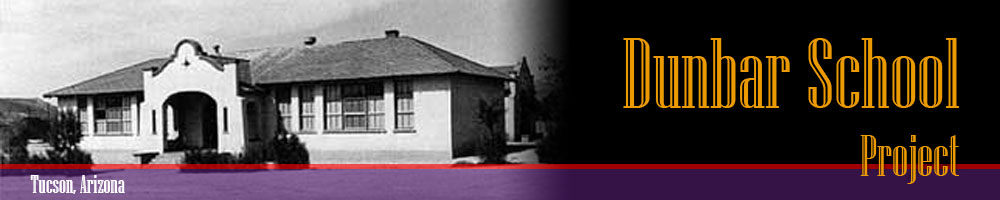

Welcome to The Dunbar Project Website
Dunbar School was a segregated middle school in Tucson, Arizona which closed as an integrated school in 1978. The school was named after Paul Laurence Dunbar, a renowned African-American poet. Dunbar School, first named Colored School, was opened to African American students on September 22, 1913. At first, students attended classes at a small building, later moving to a new premise.
Construction of a new building for the school was financed by a 1917 bond issue of $150,000 that also financed the construction of Safford Junior High School, in addition to financing repairs to existing school buildings. The school was noted for having deficient funding, and the building did not have a cafeteria, auditorium, or new textbooks. The school, however, would get an auditorium, cafeteria, and 23 classrooms in 1948
The end of the school's segregated era came in 1951, when the Arizona State Legislature repealed laws that mandated segregation of elementary and middle school students, and gave districts the authority to desegregate. That same year, the Dunbar School graduated its last all African-American group of students. Following the decision to integrate the district, then Tucson Unified School District superintendent Robert Morrow recommended the school be renamed, in an effort to erase any possible traces of segregation.The integrated school was named after early Tucson educator John Spring. Despite the end of segregation at Tucson Unified, school segregation nevertheless perpetuated, due to neighborhood housing patterns. In the 1973-1974 school year, Spring was one of 28 Tucson schools that were classified as racially identifiable.
The school was closed in 1978. In 1995, a group called the Dunbar Coalition bought the former school's building from Tucson Unified, with the aim of transforming the school building into an African-American museum and cultural center. Since then, the school's auditorium has been used as rented space, and the building is home to a barber school, a commercial kitchen, a dance studio, and a cosmetology school.[11]